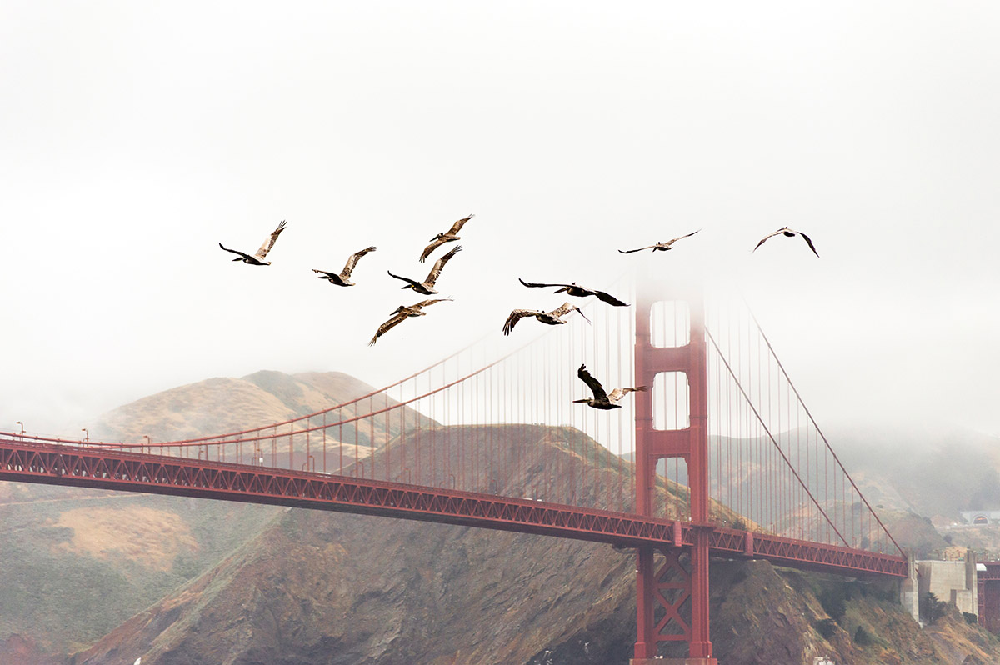

Not too big, not too small, not too fancy, not too simple, Topo Design’s Rover Pack is the Goldilocks of rucksacks. Let’s take a closer look at the bag.
The Pacific Northwest, sometimes referred to as Cascadia, is a region in western North America bounded by the Pacific Ocean to the west and, loosely, by the Rocky Mountains on the east. Though no agreed boundary exists, a common conception includes the U.S. states of Oregon and Washington and the Canadian province of British Columbia. Broader conceptions reach north into Alaska and Yukon, south into far Northern California and east into Idaho and Western Montana, western Wyoming, and western Alberta, to the Continental Divide. Narrower conceptions may be limited to the Northwestern U.S. or to the coastal areas west of the Cascade and Coast mountains. The variety of definitions can be attributed to partially overlapping commonalities of the region’s history, geography, society, and other factors.
The Northwest Coast is the coastal regions of the Pacific Northwest and the Northwest Plateau (also commonly known as “The Interior” in British Columbia and the Inland Empire in the United States) is the inland regions. The term “Pacific Northwest” should not be confused with the Northwest Territory (also known as the Great Northwest, a historical term in the United States) or the Northwest Territories of Canada.

The region’s largest metropolitan areas are Greater Seattle, Washington, with 3.7 million people; Greater Vancouver, British Columbia, with 2.4 million people; and Greater Portland, Oregon, with 2.3 million people.
A key aspect of the Pacific Northwest is the US–Canada international border, which the United States and the United Kingdom established at a time when the region’s inhabitants were composed mostly of Indigenous peoples. The border — in two sections, along the 49th parallel south of British Columbia and the Alaska Panhandle west of northern British Columbia — has had a powerful effect on the region. According to Canadian historian Ken Coates, the border has not merely influenced the Pacific Northwest—rather, “the region’s history and character have been determined by the boundary”.
Definitions of the Pacific Northwest region vary and there is no commonly agreed upon boundary, even among Pacific Northwesterners. A common conception of the Pacific Northwest includes the U.S. states of Oregon and Washington as well as the Canadian province of British Columbia. This definition is often restricted further to include only the coastal areas west of the crest of the Cascade Mountains and Canadian Coast Mountains.